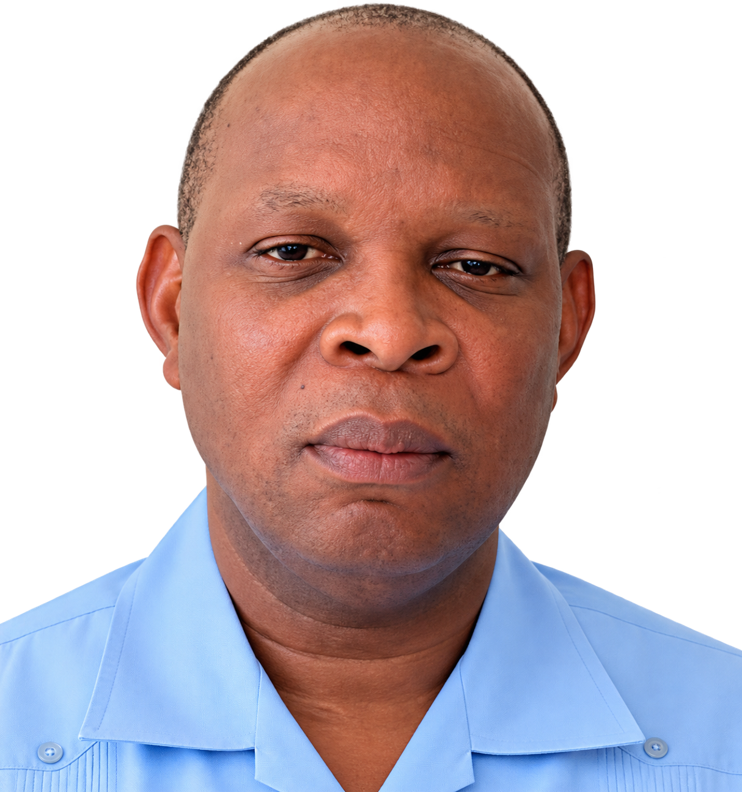

Directeur Exécutif
Rév. Père Gardy Maisonneuve
Formé à l’Université Pontificale Salésienne en Italie, le Rév. Père Gardy Maisonneuve est spécialiste des droits humains, de l’éthique et de la morale. Professeur de morale médicale et de déontologie, il a également enseigné la philosophie, la méthodologie et la catéchèse. Son parcours réunit enseignement, engagement social et responsabilités institutionnelles dans les secteurs de l’éducation, de la santé et de la société civile.
Lire le message complet